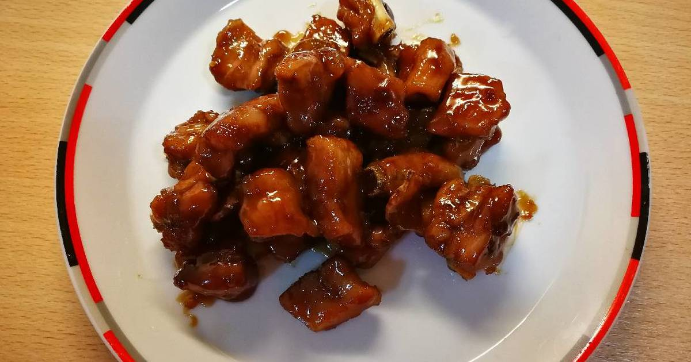

#21 - SWEET AND SOUR SPARE RIBS 1 - 糖醋排骨
This is one of most famous Shanghainese dish. My Mom cooked it very often at her dinner parties. I loved to be my mother’s sous chef when she prepared for the events. We spent hours planning and discussing the menu, and afterwards reflecting on
how the dishes turned out.

INGREDIENTS:
- 600 g spare ribs
- Vegetable oil for frying
- 3 TBSP dark soy sauce
- 2 Star anise
- 2 slices ginger
- 1 Green onion
- ¼ tsp salt
- 3 TBSP Zhenjiang vinegar鎮江醋
- 50 g rock sugar
Directions:
- Tie the green onion in a knot like a string.
- Wash spare ribs and cut between the bones.
- Dry the ribs with paper towel or kitchen towel. Let it air dry a bit more before frying.
- In a saucepan, fill at least 2 inches of vegetable oil. Heat up the oil.
- When the oil is hot, put a few pieces of spare ribs into the oil. Cover with a splatter guard immediately to prevent hot oil from splashing out.
- Use a pair of long chopsticks to stir gently to spread the ribs evenly in the oil.
- Fry until the outside of the ribs is slightly brown. Remove with a strainer.
- Repeat steps 5 & 6 until all spare ribs are done.
- Put all the ribs into another pot. Put in the soy sauce, star anise, ginger, green onion, and water to about ½ inch above the spare ribs.
- Bring to boil, and then let it simmer for 1 hour. Until the meat is tender, but not too tender that it falls off the bone.
- Add vinegar and rock sugar; continue to cook to dissolve the sugar and for vinegar to incorporate into the meat. Cook for about 20 minutes.
- Continue to stir and condense until the sauce almost evaporated, and there is a coat of dark shinning sauce on the ribs.
- Serve when it is warm, or at room temperature.
(Serves 1 person)
Note:
- Cut the spare rib into smaller pieces by cutting the meat between the bones. Try to cut at the middle, so the bone will stay one during cooking.
- Typically, I buy rack of spare ribs with bones cut to 1 ½ to 2 inches. This is the size restaurants use. However, if you cannot get it, it is ok to use whatever size you can get.
- After completing step 11, you may want to remove the excessive fat on top of the sauce. Pour the sauce into a jar and let it solidify in the refrigerator. Before serving, remove the solid fat from the top, return the sauce and ribs in a
pot, and resume step 12.
- This is the elegant version of the dish. It involves a bit more steps and requires more time and attention. For everyday home meal, I cook a simplified version. See recipe Sweet & Sour Spare Rib2.